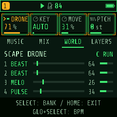

Use headphones or speakers connected to the instrument, or monitor its USB audio. The paired browser display mirrors the controls and graphics.
1. Listen to the habitat on its own
- Leave playback stopped. PLAY toggles the sequencer; stop it if its play indicator is lit.
- From the home screen, tap HOME four times to reach SCAPE MUSIC. Turn SELECT to change banks inside SCAPE.
- Go to SCAPE SETUP. Raise knob 3, LEVEL, to about 35%. This is the habitat's master level. Leave knob 4, DRONE, at zero for now.
- Go to SCAPE, under WORLD. Choose a BIOME; try JUNGL. Adjust TIME from day (0) toward night (127), and DIST from near to far.
- For a clean first listen, use SCAPE LIFE to set TRK to OFF and DANGR to zero. You will hear the procedural habitat without track-triggered creatures or passing beasts.
You do not need to press a note key or start PLAY. The habitat runs independently whenever its LEVEL is above zero.
Choose a biome before adjusting individual layer levels: a biome loads its own mix, event densities, distance and time of day.
2. Add a drone and tune it
- Keep the habitat LEVEL above zero and leave the sequencer stopped.
- Open SCAPE DRONE. Raise knob 1, DRONE, to about 20%.
- Use knob 2, KEY, to choose C, D, E or another fixed pitch. This tunes the drone without generating or replacing any sequencer patterns.
- Turn knob 3, MOVE, to hear more or less slow movement.
AUTO follows track 1's root while stopped, and the shared chord while generated SCAPE music is running. A fixed KEY keeps the drone on that pitch.
The DRONE control in SETUP and the first control in SCAPE DRONE adjust the same extra drone. It is separate from a track assigned BED or BEAST.

3. Add generated musical parts
SCAPE's musical layers use the four normal tracks and editable sequencer patterns. They need PLAY to sound. The habitat and extra drone can keep running while those patterns are stopped.
- Choose the sounds you want on the four tracks. In SCAPE ROLES, check which tracks will act as BED, MELO, BASS, PULSE or BEAST.
- Set the next composition's MOOD on SCAPE SETUP.
- On SCAPE MUSIC, press a physical note key to generate patterns in that key. If a replacement prompt appears, OCT+ confirms and OCT- cancels.
- Press PLAY when you want to hear the musical parts. Composing leaves stopped playback stopped. If music is already playing, composing leaves the transport running without forcing a restart.
- Use SCAPE MIX to balance the musical roles. Keep using the habitat LEVEL and layer banks to balance the living world separately.
It prepares or replaces the four tracks' patterns; it is more than a tuning shortcut. For habitat-and-drone listening without changing patterns, use SCAPE DRONE's KEY knob. Save patterns you want to keep before composing a new piece.
Start with ACTV 4, MOTN around 50% and CHORD 20S if you want to hear changes sooner. Leave it playing for several loops: evolution is deliberately gradual.
When should I hear a change?
| Control | What to listen for |
|---|---|
| Habitat LEVEL, DRONE level, layer levels | The level of the world, extra drone or individual environmental layer changes while the sequencer stays stopped. |
| DRONE KEY / MOVE | The extra drone's pitch and slow movement. Keep habitat LEVEL and DRONE above zero. |
| BIOME / TIME / DIST | A different mix and character. Wildlife events are random and time-of-day dependent, so some changes need a little listening time. |
| SCAPE MIX | Smoothed level changes to generated musical roles while they play. A role needs an assigned track to have anything to mix. |
| ACTV / track ROLES | Changes arrive at that track's next loop boundary while evolution is enabled and HOLD is off. |
| MUSIC EVOL | How often later phrase variations are considered at loop boundaries. It is a speed control, not a volume control. |
| MOTN | Musical layers breathing at different rates inside a shared two-minute arc. Zero removes that breathing. |
| CHORD | The next automatic harmonic change after 20, 30, 45, 60, 90, 120, 180 or 300 seconds of running music. |
| MOOD | The scale used when you compose again or choose NEW; it does not immediately rewrite the current piece. |
BED, MELO, BASS and PULSE have unequal loops of 29, 13, 23 and 17 beats. A held BEAST phrase uses 64 eighth-note steps. Their loop positions stay visible below the knobs.
All control banks
Turn SELECT through these banks in order. The four displayed cards map directly to knobs 1–4. HOME exits SCAPE; GLO+SELECT adjusts tempo.
ACTV note density; EVOL variation speed; MOTN musical breathing; CHORD automatic chord time.
EVOL on/off; MOOD scale for the next composition; LEVEL habitat master; DRONE extra drone level. SETUP's EVOL is the switch; MUSIC's EVOL is the speed.
Assign T1–T4 to AUTO, BED, MELO, BASS, PULSE or BEAST. AUTO uses bass, bed, melody and pulse in track order; SAURUS/ROAR become BEAST. Drum kits always use PULSE.
BED, MELO, BASS, PULSE balance generated musical roles without rewriting track levels. BED also controls BEAST. These are separate from the eight habitat layers.
BIOME environment preset; TIME day/night; DIST near/far; RATE creature-call frequency. Raise LEVEL on SETUP to hear the habitat.
DRONE level; KEY AUTO or fixed pitch; MOVE slow movement; PTCH creature pitch offset.
TRK supplies a track sound for calls, or OFF; DANGR passing-beast frequency; SIZE size of the pass; PTCH creature pitch offset. Calls and passes can happen while the sequencer is stopped.
Habitat levels for WIND, WATER, RAIN and BUGS.
Habitat levels for FROGS, BIRDS, DRIPS and RUMBL. These control level; each biome still supplies the event densities.
HOLD freezes automatic musical changes and breathing while playback continues; NEXT advances harmony once; NEW generates another piece in the same key and releases HOLD; CHORD sets automatic chord time. NEW leaves playback stopped if it was stopped.
EVOL off, HOLD and stopped transport pause the musical director. They do not freeze the independent habitat. Normal song-chain playback suspends the director.
Use two screens while playing
- Connect the matching display and choose Expanded.
- Hold HOME, then tap OCT- for the left side or OCT+ for the right. Release the buttons, then edit normally.
- Each side remembers its bank and selected track. MUSIC on one side and MIX on the other is a useful pairing.
Keep the display tab visible and connected. Finish a confirmation dialog or held editing layer before swapping. Original mode shows one screen and disables the swapping gesture.
If something seems unresponsive
I hear nothing with PLAY stopped.
Raise LEVEL on SCAPE SETUP. For the extra drone, also raise DRONE. For creatures, select a TRK on SCAPE LIFE and raise RATE or DANGR. The procedural habitat does not need a note key.
A MIX knob does nothing.
It controls generated music, rather than habitat layers. Start the musical patterns with PLAY and check ROLES: if no track is assigned BASS, the BASS knob has nothing to change.
The wildlife stays quiet.
Check habitat LEVEL, the relevant layer's level, BIOME and TIME. The biome sets event density; the layer knob sets loudness. Frogs favor night, while birds favor day. Events are spaced randomly.
Music is not evolving.
Check PLAY, SETUP EVOL on and SCENE HOLD off. Let a full track loop finish; longer CHORD values need more time. Song-chain playback suspends automatic SCAPE changes.
Choosing a key still starts playback.
The earlier candidate did that. This guide accompanies the manual-playback update. Use its matched installer and display; the updated behavior leaves transport under your control.
I want the habitat quiet while keeping music.
Set the habitat LEVEL to zero. The four sequencer tracks keep their own playback and levels.